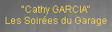
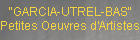

| 2008 |
| Janvier |
| Janvier |
| Mars |
| Avril |
| Mai |
| Juin |
| Juin |
| Août |
| Septembre |
|  |
| Octobre |
| Novembre |
| Décembre |
| Décembre |
|  |
 |
|
|
Les Confluences du Garage > 30 nov. au 07 déc. 2008 > vernissage 29/11 à 18 h 30
Carte blanche à Thomas SABOURIN Dans les coins SUR LES ARBRES par Thomas Sabourin Raymond.Queneau disait que « Dieu n'aime pas le piano », je vais dire pourquoi à mon sens, les mataphysiciens n'aiment pas (ou ne devraient pas aimer) les arbres. L'exposé qui suit est un parfait a posteriori dont l'a priori fut « l'arbre en miroir » visible dans le jardin de l'Atelier blanc. J'insiste sur ce point de méthode qui reflète à mon sens une question de nature : il en va dans cet ordre des actions, de la nature de ce que l'on conviendra d'appeler -au sens le plus large- une « oeuvre d'art ». Il ne s'agit en fait pas pour moi de donner une « image », pire, une illustration, d'une pensée préalable, mais bien dans une pensée a posteriori de chercher à m'aventurer par la pensée dans ce que j'ai bien pu faire avant d'y penser. C'est un exercice de l'ordre de l'interprétation des rêves : il s'agit de découvrir les sentiments qui sont investis dans une projection de l'imagination, de découvrir ce que j'éprouve à l'épreuve de cette production. C'est pourquoi une remarque s'impose encore : il ne s'agit pas ici de donner des « clefs » de compréhension, de livrer le paradigme d'une symbolique qui serait cryptée dans une oeuvre, mais bien de s'intéroger sur le sentiment précis qui, m'unissant à telle chose, en l'occurrence ici, les arbres, a pu me conduire -à partir de ce sentiment- à produire une « image » (au sens large de production de l'imagination ). La question est donc : quel sentiment des arbres me conduisit à proposer au regard de mes contemporains une chose telle que cet « arbre en miroir »? Ce sont ces sentiments qui peuvent produire une pensée, et non une pensée qui précédant le « faire » le conditionnerait en le projetant. L'oeuvre d'art doit être grosse d'une réserve de pensée encore indistincte, grosse d'une variété indéfinie d'interprétations possibles, bref, elle se doit d'être l'ouverture des possibilités. Le langage informatif dit quelque chose de quelque chose, une production de l'imagination constitue le dire dont tout autre langage dira par la suite quelque chose. La poésie doit pouvoir proférer des énormités dont ni la science ni la philosophie n'ont encore idée, et comme E.A.Poe qui imaginait que la nuit est noir parce que la lumière des étoiles n'a pas le temps de nous parvenir bien avant que cette idée ne prenne place dans les théories de la physique moderne, il n'est pas dément de penser que les astres, soleils et étoiles, de Van Gogh, soient à l'origine de l'invention de la manière moderne de stoker le fourage, en bales spiralées (c'est une évidence pour qui a vu au moins une fois ces bales de paille dans le crépuscule du Vexin près d'Auvers). {...} Découvrir d'autres travaux de Thomas Sabourin : http://www.taysse.fr Voir le dossier de presse : ICI INFORMATIONS PRATIQUES Exposition ouverte du dimanche 30 novembre au dimanche 7 décembre 2008 (voir lien vers horaires - bas de page) Vernissage : samedi 29 novembre à partir de 18h30 en présence de Thomas Sabourin Lieu : Garage Donadieu - 15 rue Donadieu - 46000 Cahors - (voir lien vers plan - bas de page) Contact : Michel Brissaud - 05 65 21 14 47 Photos : © Thomas Sabourin / quinze donadieu |
||||||||||
|
|
|||||||||||
|
||||||||||||
 |
||||||||||||